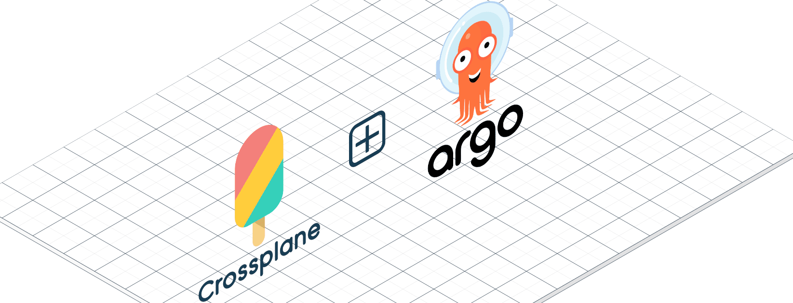
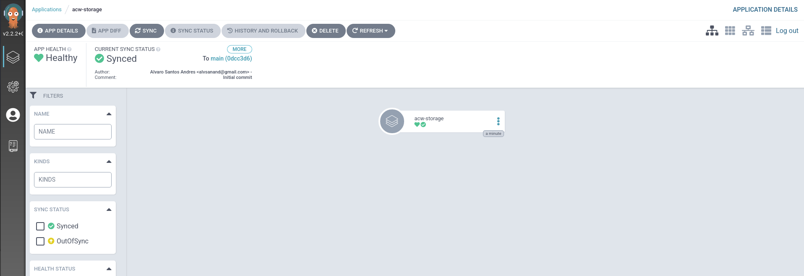

Lab 3 - Implement GitOps

GitOps is a set of practices to manage infrastructure and application configurations using Git, an open source version control system. GitOps works by using Git as a single source of truth for declarative infrastructure and applications. The Git repository contains the entire state of the system so that the trail of changes to the system state are visible and auditable.
Using GitOps tool such as Argo CD or Flux CD, we will be able to make our target system match the desired state that is coded in the Git repository. So when we will deploy new resources or update an existing ones, after updating the repository the automated process will apply the changes.
In the last laboratory, we will apply this concepts to deploy our infrastructure using Crossplane and Argo CD without human intervention.
Info
If you want to know more about Gitops and Argo CD, please read my article From GIT to Kubernetes in 10 minutes with ArgoCD.
1. Creating IaC repository
As said before, a Git will be our source of truth for our infrastructure and will contain the entire state and history of it. So that the trail of changes to the system state are visible and auditable.
1.1. Create a Github repository
First thing to do is to create a Git repository that we will use to store the Crosplanes files.
1 2 3 | |
1.2. Add Crossplane resources
Next, we have to add the yaml files containing the Crossplain resources. However, we will not push the changes to the repository.
Tip
In this case, we have to add argocd.argoproj.io/sync-wave and argocd.argoproj.io/sync-options annotations that will indicate ArgoCD the order of execution so claim must execute only after XD resources are created. See Sync Phases and Waves and Skip Dry Run for new custom resources types for more information.
-
Create a
CompositeResourceDefinitionfile.1 2 3 4 5 6 7 8 9 10 11 12 13 14 15 16 17 18 19 20 21 22 23 24 25 26 27 28 29 30 31 32 33 34 35 36
cat > 1_definition.yaml <<EOF apiVersion: apiextensions.crossplane.io/v1 kind: CompositeResourceDefinition metadata: name: xdostorages.storage.acw.alvsanand.github.io annotations: argocd.argoproj.io/sync-wave: "1" spec: group: storage.acw.alvsanand.github.io names: kind: XDObjectStorage plural: xdostorages claimNames: kind: ObjectStorage plural: ostorages versions: - name: v1alpha1 served: true referenceable: true schema: openAPIV3Schema: type: object properties: spec: type: object properties: parameters: type: object properties: storageName: type: string required: - storageName required: - parameters EOF -
Create a
Compositionfile.1 2 3 4 5 6 7 8 9 10 11 12 13 14 15 16 17 18 19 20 21 22 23 24 25 26 27 28 29 30 31 32 33
cat > 1_composition.yaml <<EOF apiVersion: apiextensions.crossplane.io/v1 kind: Composition metadata: name: xdostorages.aws.storage.acw.alvsanand.github.io labels: serviceType: storage provider: aws annotations: argocd.argoproj.io/sync-wave: "1" spec: compositeTypeRef: apiVersion: storage.acw.alvsanand.github.io/v1alpha1 kind: XDObjectStorage resources: - name: s3bucket base: apiVersion: s3.aws.crossplane.io/v1beta1 kind: Bucket spec: forProvider: acl: public-read-write locationConstraint: us-east-1 providerConfigRef: name: default patches: - fromFieldPath: "spec.parameters.storageName" toFieldPath: "metadata.name" transforms: - type: string string: fmt: "%s-acw" EOF -
Create a
Claimfile.1 2 3 4 5 6 7 8 9 10 11 12 13 14 15 16
cat > 2_claim.yaml <<EOF apiVersion: storage.acw.alvsanand.github.io/v1alpha1 kind: XDObjectStorage metadata: name: some-bucket namespace: default annotations: argocd.argoproj.io/sync-wave: "2" argocd.argoproj.io/sync-options: SkipDryRunOnMissingResource=true spec: compositionSelector: matchLabels: provider: aws parameters: storageName: some-bucket EOF
2. Create an App in ArgoCD
After the repository is created, we should create an Application in ArgoCD. Therefore, ArgoCD will sync the Crossplane resources will the state stored in the repository. However, having the repository with no files will not create any resources.
-
Obtain HTTPS url of the GIT repository.
1HTTPS_REPO_URL=$(git remote show origin | sed -nr 's/.+Fetch URL: git@(.+):(.+).git/https:\/\/\1\/\2.git/p') -
Create a new Application in auto mode and listening to the master.
1 2 3 4 5 6 7 8 9 10 11 12 13 14 15 16 17 18
cat <<EOF | kubectl apply -f - apiVersion: argoproj.io/v1alpha1 kind: Application metadata: name: acw-storage namespace: argocd spec: project: default source: repoURL: $HTTPS_REPO_URL targetRevision: main path: . destination: server: https://kubernetes.default.svc namespace: apify-your-infra-with-crossplane syncPolicy: automated: {} EOF -
Wait until the application is sync.
1 2 3 4 5
kubectl get applications -n argocd acw-storage ... NAME SYNC STATUS HEALTH STATUS acw-storage Synced Healthy -
Furthermore, you can check in ArgoCD UI the status of the application.

3. Commit changes to Github
After ArgoCD is ready to watch for changes, we will push the files to the repo in order to force the deployment.
-
Add files and generate a commit.
1 2
git add *.yaml git commit -m "Added Crossplane files" -
Push changes to Github.
1git push --set-upstream origin main
4. Wait for ArgoCD to sync
Now that the changes are in Git, ArgoCD will detect the chances and sync our infrastructure to match the state of the repository.
- Wait some minutes until the application is synced.

-
After the sync is completed, you can check the application status.
1 2 3 4 5 6 7 8 9 10 11 12 13 14 15 16 17 18 19 20 21 22 23 24 25 26 27 28 29 30 31 32 33 34 35 36 37 38 39 40 41 42 43 44 45 46 47 48 49 50 51 52 53 54 55 56 57 58 59 60 61 62 63 64 65 66 67 68 69 70 71 72 73 74 75 76 77 78 79 80 81 82 83 84 85 86 87 88 89 90 91 92 93 94 95 96 97 98 99 100 101 102 103 104 105 106 107 108 109 110 111 112 113 114 115 116 117 118 119 120 121 122 123 124 125 126 127 128 129 130 131 132 133 134 135 136 137 138 139 140 141 142 143 144 145 146 147 148 149 150 151 152 153 154 155 156 157 158 159 160 161 162 163 164 165 166 167 168 169 170 171 172 173 174 175 176 177 178 179 180 181 182 183 184 185 186 187 188 189 190 191 192 193 194 195 196 197 198 199 200 201 202 203 204 205 206
kubectl describe applications -n argocd acw-storage ... Name: acw-storage Namespace: argocd Labels: <none> Annotations: <none> API Version: argoproj.io/v1alpha1 Kind: Application Metadata: Creation Timestamp: 2022-01-07T12:51:44Z Generation: 12 Managed Fields: API Version: argoproj.io/v1alpha1 Fields Type: FieldsV1 fieldsV1: f:metadata: f:annotations: .: f:kubectl.kubernetes.io/last-applied-configuration: f:spec: .: f:destination: .: f:namespace: f:server: f:project: f:source: .: f:path: f:repoURL: f:targetRevision: f:syncPolicy: .: f:automated: Manager: kubectl-client-side-apply Operation: Update Time: 2022-01-07T12:51:44Z API Version: argoproj.io/v1alpha1 Fields Type: FieldsV1 fieldsV1: f:status: .: f:health: .: f:status: f:history: f:operationState: .: f:finishedAt: f:message: f:operation: .: f:initiatedBy: .: f:automated: f:retry: .: f:limit: f:sync: .: f:revision: f:phase: f:startedAt: f:syncResult: .: f:resources: f:revision: f:source: .: f:path: f:repoURL: f:targetRevision: f:reconciledAt: f:resources: f:sourceType: f:summary: f:sync: .: f:comparedTo: .: f:destination: .: f:namespace: f:server: f:source: .: f:path: f:repoURL: f:targetRevision: f:revision: f:status: Manager: argocd-application-controller Operation: Update Time: 2022-01-07T12:51:52Z Resource Version: 27693 UID: 24016e22-b199-4ed4-9f2b-6ce96018f798 Spec: Destination: Namespace: apify-your-infra-with-crossplane Server: https://kubernetes.default.svc Project: default Source: Path: . Repo URL: https://github.com/alvsanand/acw-crossplane-with-argocd.git Target Revision: main Sync Policy: Automated: Status: Health: Status: Healthy History: Deploy Started At: 2022-01-07T12:51:45Z Deployed At: 2022-01-07T12:51:52Z Id: 0 Revision: 2d55ed389750624c21bce8c2d534f4b77d72f837 Source: Path: . Repo URL: https://github.com/alvsanand/acw-crossplane-with-argocd.git Target Revision: main Operation State: Finished At: 2022-01-07T12:51:52Z Message: successfully synced (all tasks run) Operation: Initiated By: Automated: true Retry: Limit: 5 Sync: Revision: 2d55ed389750624c21bce8c2d534f4b77d72f837 Phase: Succeeded Started At: 2022-01-07T12:51:45Z Sync Result: Resources: Group: apiextensions.crossplane.io Hook Phase: Succeeded Kind: Composition Message: composition.apiextensions.crossplane.io/xdostorages.aws.storage.acw.alvsanand.github.io created Name: xdostorages.aws.storage.acw.alvsanand.github.io Namespace: apify-your-infra-with-crossplane Status: Synced Sync Phase: Sync Version: v1 Group: apiextensions.crossplane.io Hook Phase: Succeeded Kind: CompositeResourceDefinition Message: compositeresourcedefinition.apiextensions.crossplane.io/xdostorages.storage.acw.alvsanand.github.io created Name: xdostorages.storage.acw.alvsanand.github.io Namespace: apify-your-infra-with-crossplane Status: Synced Sync Phase: Sync Version: v1 Group: storage.acw.alvsanand.github.io Hook Phase: Running Kind: XDObjectStorage Message: xdobjectstorage.storage.acw.alvsanand.github.io/some-bucket created Name: some-bucket Namespace: apify-your-infra-with-crossplane Status: Synced Sync Phase: Sync Version: v1alpha1 Revision: 2d55ed389750624c21bce8c2d534f4b77d72f837 Source: Path: . Repo URL: https://github.com/alvsanand/acw-crossplane-with-argocd.git Target Revision: main Reconciled At: 2022-01-07T12:51:52Z Resources: Group: apiextensions.crossplane.io Kind: CompositeResourceDefinition Name: xdostorages.storage.acw.alvsanand.github.io Status: Synced Version: v1 Group: apiextensions.crossplane.io Kind: Composition Name: xdostorages.aws.storage.acw.alvsanand.github.io Status: Synced Version: v1 Group: storage.acw.alvsanand.github.io Kind: XDObjectStorage Name: some-bucket Status: Synced Version: v1alpha1 Source Type: Directory Summary: Sync: Compared To: Destination: Namespace: apify-your-infra-with-crossplane Server: https://kubernetes.default.svc Source: Path: . Repo URL: https://github.com/alvsanand/acw-crossplane-with-argocd.git Target Revision: main Revision: 2d55ed389750624c21bce8c2d534f4b77d72f837 Status: Synced Events: Type Reason Age From Message ---- ------ ---- ---- ------- Normal OperationStarted 4m34s argocd-application-controller Initiated automated sync to '2d55ed389750624c21bce8c2d534f4b77d72f837' Normal ResourceUpdated 4m34s argocd-application-controller Updated sync status: -> OutOfSync Normal ResourceUpdated 4m34s argocd-application-controller Updated health status: -> Healthy Normal ResourceUpdated 4m33s argocd-application-controller Updated sync status: -> OutOfSync Normal ResourceUpdated 4m33s argocd-application-controller Updated health status: -> Healthy Normal OperationCompleted 4m27s argocd-application-controller Sync operation to 2d55ed389750624c21bce8c2d534f4b77d72f837 succeeded Normal ResourceUpdated 4m27s argocd-application-controller Updated sync status: OutOfSync -> Synced -
Finally, you can check in ArgoCD UI the status of the application.

-
Check that the xdostorages is created.
1 2 3 4 5
kubectl get xdostorages ... NAME READY COMPOSITION AGE some-bucket True xdostorages.aws.storage.acw.alvsanand.github.io 89s -
Check that the bucket object is created.
1 2 3 4 5
kubectl get bucket ... NAME READY SYNCED AGE some-bucket-acw True True 113s -
Check that the bucket has been created in LocalStack.
1 2 3 4 5 6 7 8 9 10 11 12 13 14 15
awslocal s3api list-buckets ... { "Buckets": [ { "Name": "some-bucket-acw", "CreationDate": "2022-01-06T08:05:16.000Z" } ], "Owner": { "DisplayName": "webfile", "ID": "bcaf1ffd86f41161ca5fb16fd081034f" } }
5. Cleanup the laboratory
Last step, delete all resources created. In this case, we should delete the application and ArgoCD will delete the resources created with it.
-
Delete the application.
1kubectl delete application -n argocd acw-storage -
Check that the bucket has been created in LocalStack.
1 2 3 4 5 6 7 8 9 10
awslocal s3api list-buckets ... { "Buckets": [], "Owner": { "DisplayName": "webfile", "ID": "bcaf1ffd86f41161ca5fb16fd081034f" } }